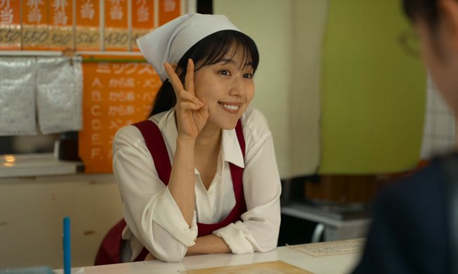

Cross-Pollination of Mumbled Nothingness
(Cross-Pollination) n.
Dialogue that arrives mid-thought. Characters speak as though the conversation began before the scene did, ideas accumulating across registers, articulate in feeling if not always in structure. The film trusts the viewer to feel the through-line before they see it. Somewhat articulately well spoken and earnest.
